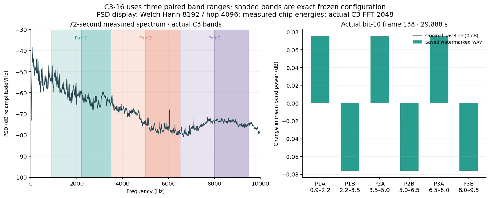
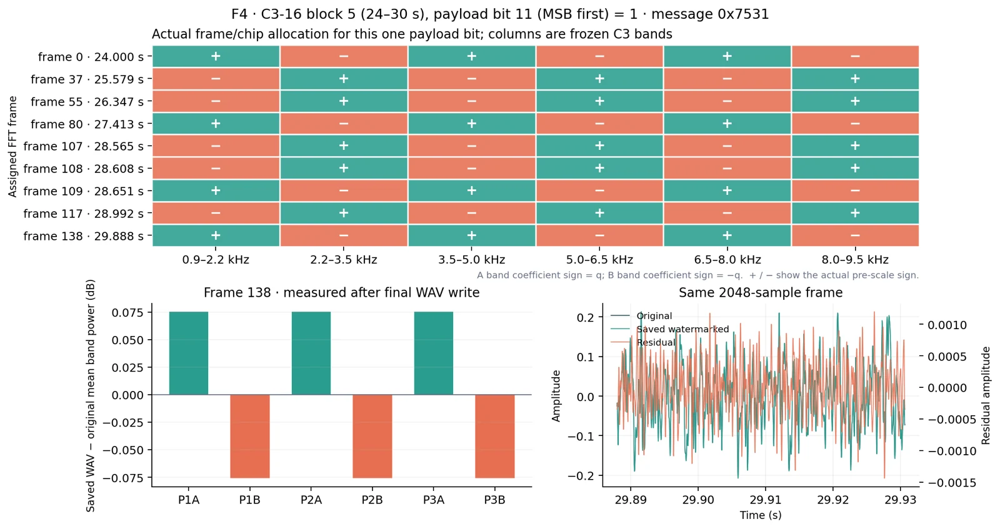
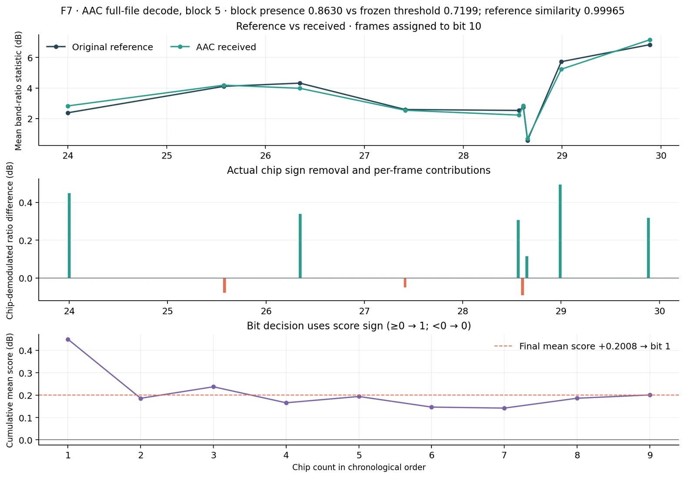
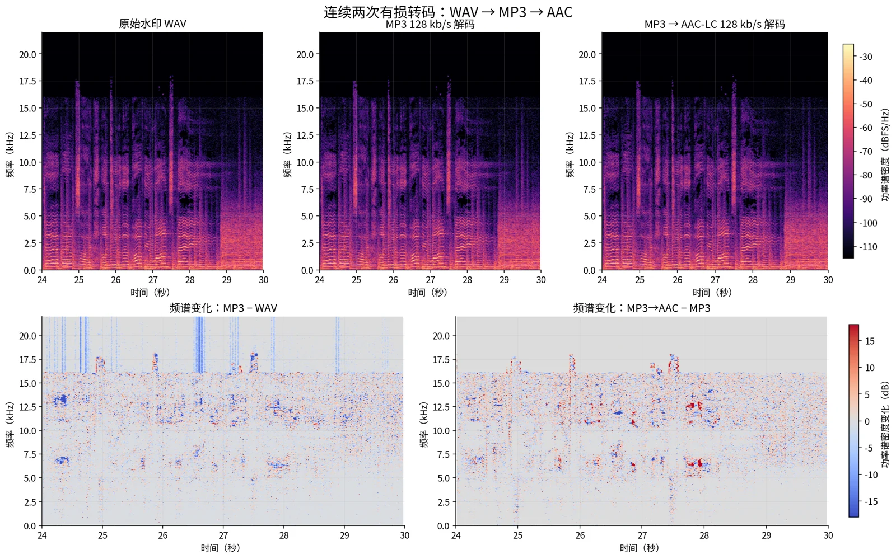

01 / FREQUENCY BANDS频带选择
EA(t) = 1|A| ∑k∈A|Xt[k]|²
对六段频带分别统计功率，按三个频带对构造相对能量。相位保持不变。
在真实音乐中嵌入数字消息，在常见音频处理后尝试恢复。我们实现了一个参考辅助的多频带数字音频水印系统，并为不同的信息需求设计了两种工作模式。
一段真实连续音乐，贯穿嵌入、转码与水印恢复的展示。
当同一段音乐被重新编码、导出或分发时，文件名和元数据可能发生变化。数字水印提供了一种内容内的信息载体：让标识与音频信号一起经历处理。
本系统面向已知原音的受控分发场景。检测需要对应原音作为参考，不宣称任意音乐识别或版权真实性认证。
水印通过多频带能量调制写入音乐；接收后结合原音参考，以统计方式恢复消息。
接收端使用匹配的无水印原音，但不会预先获得待恢复的消息。
每 6 秒承载一段新的 16-bit 信息。连续 72 秒的 12 个数据块组成 192-bit 独立消息。
不同于上面的历史实验回放，这里会调用真正的 Python / FFmpeg 后端。你可以使用示例音乐，也可以上传自己的音频，在浏览器中完成嵌入、处理与参考辅助检测。
支持常见音频格式，服务端转换为 48 kHz 单声道。截取前 6 或 72 秒。单文件上限 32 MiB。
02 / PROCESS & DETECT
本实验真正执行公开版算法。不同音乐的结果可能失败；对某些 AAC 音源，高容量模式可能发生误接受。真实历史结果与本次在线计算使用不同密钥、不同样本，不能混为一谈。
不是替换某个频率点，而是将消息按密钥分散到多个 FFT 帧，对成对频带的相对能量作微小调整。
对六段频带分别统计功率，按三个频带对构造相对能量。相位保持不变。


每一位消息在多个时间帧中重复出现，密钥决定分配位置和 chip 符号；频带对按相反方向调整幅度。
接收端比较相对频带能量，再按 chip 符号聚合、判决每个 bit，并进行水印存在性检查。

下方展示的是实际音频信号的变化：频谱结构、幅度和重采样残差，而不只是“检测成功”的数字。

同一份完整 72 秒水印 WAV 先经 MP3 128 kbps，再由 MP3 转为 AAC-LC 128 kbps。图中对照三个真实阶段的时频谱及其差异。
本页图像均来自保存的处理输出和实测数据；展示经过精选的音乐案例，不代表任意音频都能成功。
同一套算法在不同信息容量和音频条件下，并不会得到完全一致的表现。
两组测试使用不同音源规模与协议，不能按同一组配对实验比较。
检测需要与接收信号匹配的无水印原音。高容量 C3 在部分 AAC 音源下存在错误消息接受与拒绝；精选案例的 12/12 并不代表总体成功率。
查看完整实验口径 ↗